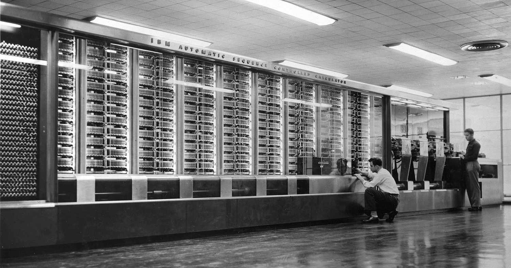
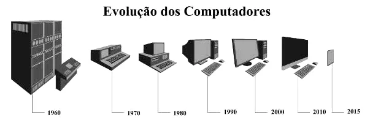
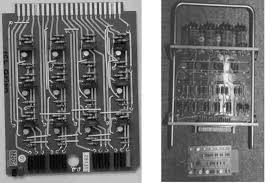
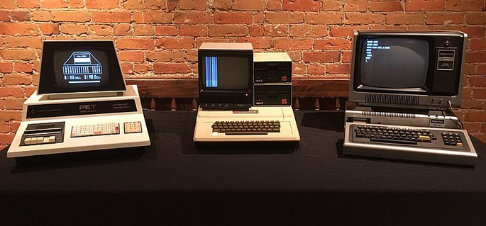

A História dos Computadores


Os Primeiros Computadores
Neste módulo estudei sobre a geração dos computadores a partir do surgimento e evolução na linha do tempo:
- 1a Geração (1944 a
1946):
- 1944: Havard Mark I
- 1946: Colossus
- 1946: ENIAC
- 2a Geração (1959 a
1965):


- 3a Geração (1965 a
1970):
- Circuitos Integrados (Transistor, Capacitor e Resistor)
- 4a Geração (a partir de
1971):
- PC's, Mouse, Desktop, Notebook, Smartphones
- 5a Geração (nova
classificação):
- IA, Criptomoedas, Metaverso
O Surgimento da Internet
A internet surgiu a partir de pesquisas militares no auge da Guerra Fria. Neste contexto, em que os dois blocos
ideológicos e politicamente antagônicos exerciam enorme controle e influência no mundo, qualquer mecanismo,
qualquer inovação, qualquer ferramenta nova poderia contribuir nessa disputa liderada pela União Soviética e pelos
EUA.
Cronologia dos principais eventos da história da Internet até o surgimento do primeiro navegador:
- 1958: O primeiro modem capaz de transmitir dados por uma linha telefônica é criado nos laboratórios BELL.
- 1969: Leonard Kleinrock, um defensor da teoria de comutação de dados por pacote desde 1961, conecta os primeiros 4 computadores em universidades americanas.
- 1971: A ARPANET agora inclui 23 computadores nos Estados Unidos. Roy Thompson envia o primeiro e-mail de todos.
- 1974: Vint Cerf e Bob Khan usam o termo “Internet” pela primeira vez.
- 1982: Os protocolos TCP / IP são introduzidos na rede.
- 1991: Lançamento público da World Wide Web.
- 1993: O primeiro navegador, NCSA Mosaic, aparece.
Observações:
- Elaborado por Milena Fontenele em
10/09/2023 como resolução do desafio proposto ao final do curso Primeiros Passos com HTML.
- A tag font não é suportada no html:5 por este motivo não foi utilizada